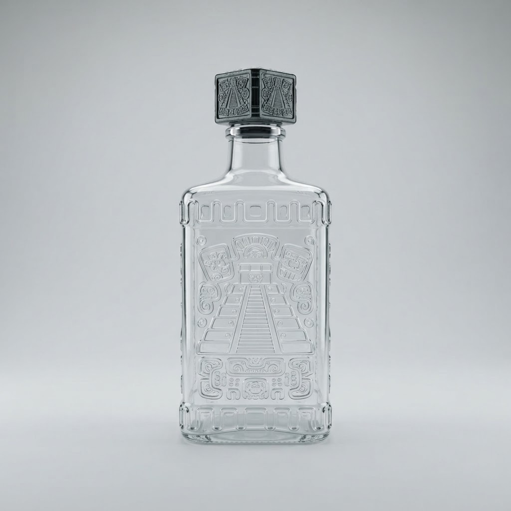

Сколько стоит ром bumbu купить в спб в Курортном районе
Курортный район славится своими просторами, но порой именно удаленность от центра становится помехой, когда нужно пополнить бар. Мы решаем эту проблему: ночная доставка элитного алкоголя по всему району занимает не более часа.
Сколько стоит ром bumbu купить в спб в Курортном районе
Часто клиенты задают вопрос, в какую сумму обойдется доставка и сам напиток в ночное время. Bumbu — это премиальный карибский ром, который ценят за мягкость и пряные ноты ванили и карамели. Разбирая наш случай: основной запрос покупателя связан не только с ценой, но и со скоростью получения заказа. В ассортименте представлены два ключевых вида: классический Bumbu The Original и выдержанный Bumbu XO. Оригинальный релиз отличается золотистым оттенком и крепостью сорок градусов, что делает его универсальным для коктейлей или употребления в чистом виде. Версия XO выдерживается в бочках из-под хереса до восемнадцати лет, приобретая глубокий вкус кофе, дуба и специй. При расчете стоимости для жителей Курортного района мы учитываем логистические издержки, но сохраняем доступность премиального сервиса. Важно понимать, что покупка в ночное время — это оплата комфорта и гарантии того, что ваш вечер не прервется из-за отсутствия качественного напитка. Мы работаем оперативно, чтобы вы могли наслаждаться Bumbu без необходимости покидать дом в поздний час.
Как выбрать вид рома Bumbu для заказа
Выбор между оригинальной версией и XO зависит от ваших предпочтений и формата вечера. Bumbu The Original — это легкий, «питейный» вариант, который идеально раскрывается в сочетании с большим количеством льда или в составе простых миксов. Он обладает выраженным ароматом тропических фруктов, что делает его предпочтительным для больших компаний, ценящих непринужденную атмосферу. С другой стороны, Bumbu XO — это напиток для неспешной дегустации. Сложная палитра вкусов, сформированная длительной выдержкой в бочках из-под хереса, делает его самодостаточным. Этот ром не требует добавок, так как его богатый профиль раскрывается постепенно при комнатной температуре. Если вы планируете вечер в спокойном формате, рекомендую отдать предпочтение именно XO. Мы доставим любой из выбранных вариантов в кратчайшие сроки, обеспечив правильные условия транспортировки напитка. Понимая особенности каждого вида, вы не просто совершаете покупку, а выбираете идеальный инструмент для настроения вашего отдыха в Курортном районе.
Можно ли гарантировать целостность бутылки при доставке?
Мы используем профессиональную упаковку с защитой от ударов и падений. Курьеры бережно перевозят хрупкие грузы, поэтому вы гарантированно получите заказ в идеальном состоянии. С нашей доставкой риск повреждения исключен.
Итог
Итог всегда один: назвать следующий шаг покупателю — оформить заказ и получить его в течение часа в своём районе.
Заказать доставку
Оформите заказ сейчас: привезём за 40-60 минут в любой район Петербурга, круглосуточно.
Призыв
Сколько стоит текила ольмека сильвер цена в Курортном районеКурортный район славится своими просторами, но удаленность от центра часто становится препятствием для тех, кто планирует вечер. Наш сервис решает эту пробле…Сколько стоит sauza купить в Курортном районеКурортный район славится своими загородными локациями, где вечерний отдых часто затягивается до рассвета. Когда запас напитков исчерпан, оперативная ночная д…Сколько стоит olmeca gold tequila купить в спб в Курортном районеКурортный район славится своими просторами, но поиск качественного алкоголя в ночное время здесь часто превращается в проблему из-за удаленности торговых точ…